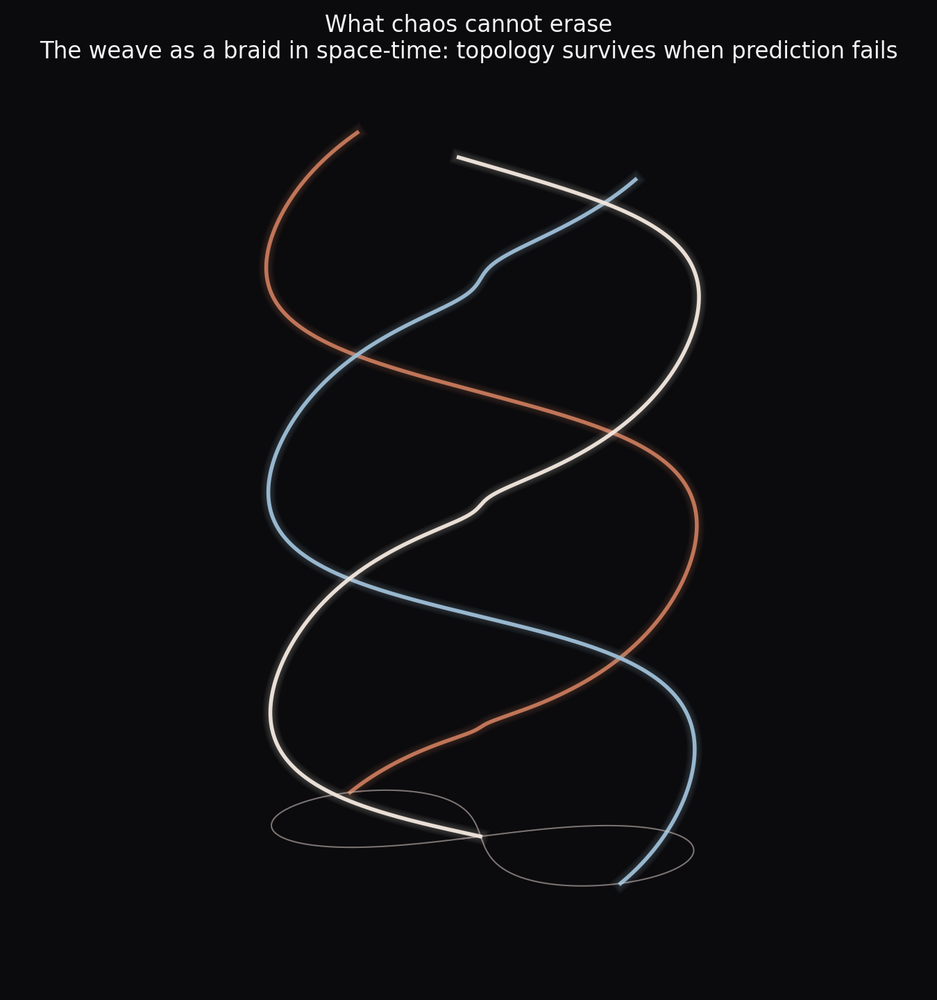

Books that are played, not just read.
Interactive books — live simulations, executable mathematics, and narrative — built on the research. If you don't want to ignore, you have to play.
Shape, Chaos and the Beautiful Game.
Teaching maths and physics through sports and the three-body problem.

Jupyter Book · simulations · six-figure galleryFrom Gilgamesh's wrestling match to the shape sphere.
The book climbs a ladder — coin, duel, team — and asks at each rung where unpredictability comes from and how mathematics tames it. The 3-man weave turns out to be a choreography of the three-body problem; tango and wrestling share one physics; and whether three bodies fall into chaos depends not on the number three, but on the force law. With live labs you can drag, launch, and break — no installation, everything in the browser.
Read & play →
The first fight
Gilgamesh and Enkidu, replayed as dynamics: the symmetric two-body problem, the walls that shook, and the duel that became a duet.
Maths as the language of ignorance
The coin as the first experiment we ran on ourselves; game theory as ignorance wielded; topology as the knowledge chaos cannot erase.
Play the physics
A three-body playground with the weave and chaos twins, a draggable team-shape explorer, and ball flight with spin — live in every chapter.